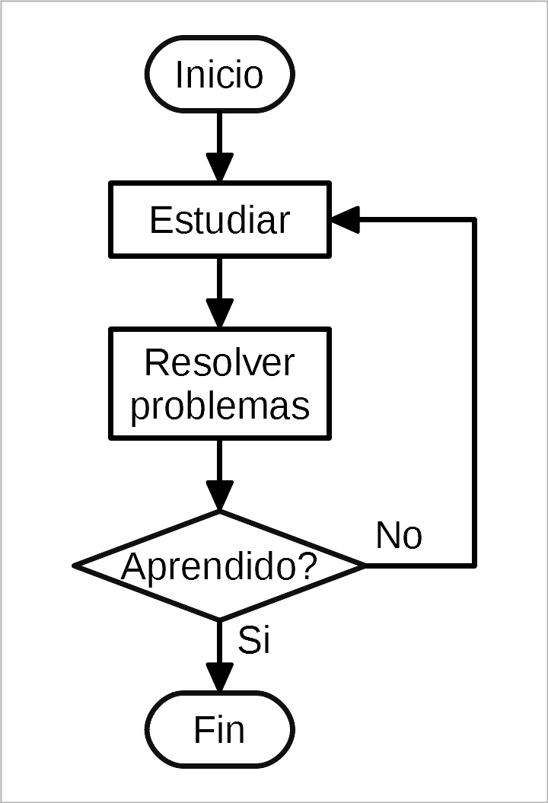
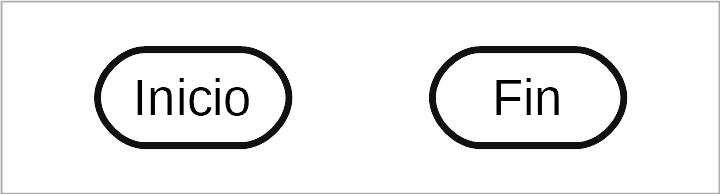
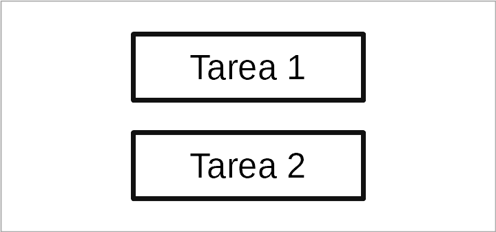
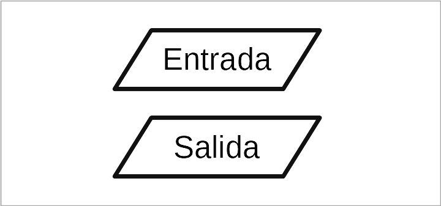
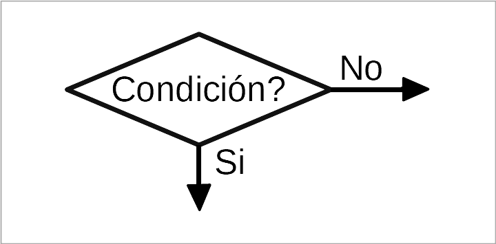
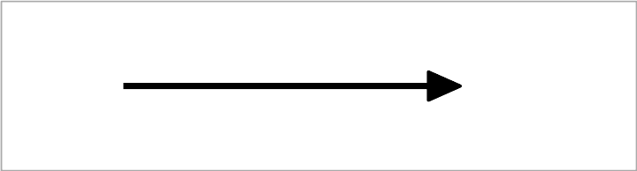
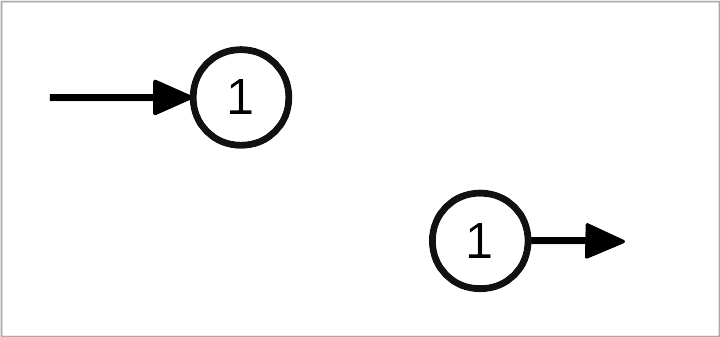
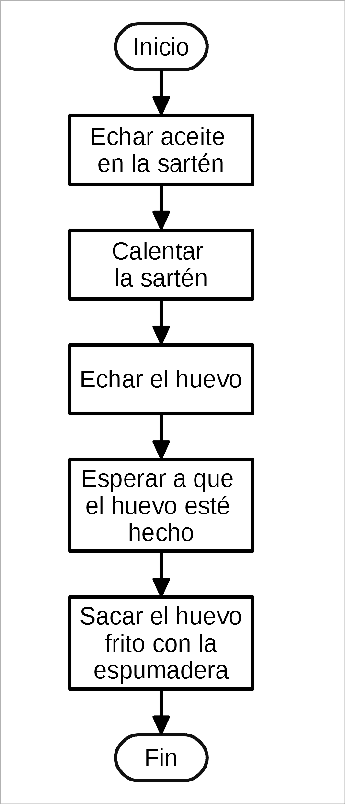
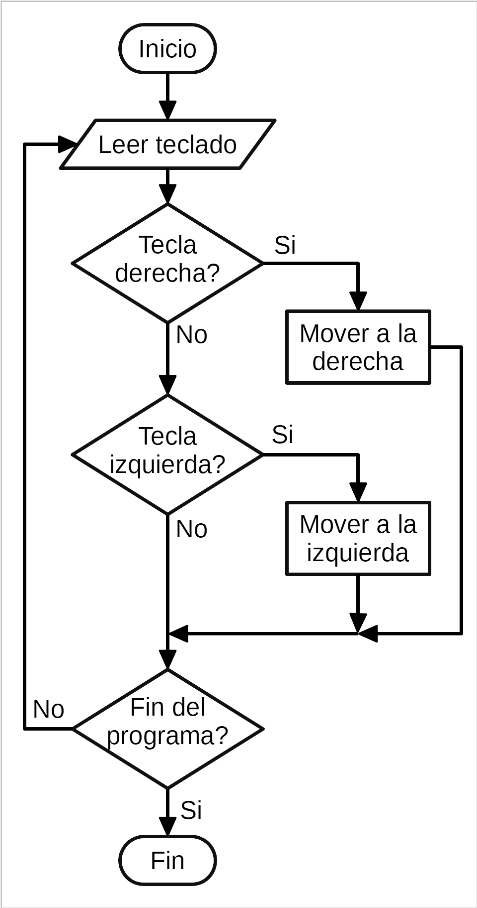

Diagrames de flux¶
Un diagrama de flux és un dibuix que representa un procés que detalla les seves tasques i decisions. El seu propòsit és expressar de manera senzilla i visual el que passa en un procés o en un programa, de manera que sigui fàcil d’entendre.
Els diagrames de flux es poden presentar al programador de manera que entengui millor el que el client vol realitzar. Posteriorment, el programador desenvolupa el programa basat en els diagrames de flux.
Els diagrames de flux també es dibuixen per documentar un programa informàtic un cop acabat, per comunicar el que fa el programa de manera visual i comprensible.
Els diagrames de flux no es limiten a representar el funcionament dels programes, també ens poden informar de les tasques que hem de realitzar en una situació determinada.
Aquesta és l’aparició d’un diagrama de flux:
{kind=link}

Símbols¶
A continuació, es presenten els símbols principals que s’utilitzen per dibuixar diagrames de flux.
** Start i Final **
Tots els diagrames de flux han de tenir un símbol d’inici i un símbol de finalització, que es representen amb rectangles arrodonits als extrems.
{kind=link}

Els símbols d’inici i finalització del programa.¶
** Tasques **
Les tasques realitzades pel programa estan representades amb rectangles. Dins del rectangle heu d’escriure en què consisteix la tasca. Per exemple, afegiu dos números o envieu un missatge.
{kind=link}

Símbol de la tasca.¶
** Entrada i sortida de dades **
Quan la tasca consisteix en una entrada o sortida de dades, com ara escriure a la pantalla, demanant que l’usuari escrigui un text, imprimeixi un full de paper, etc. En aquest cas, la tasca tindrà un formulari de rectangle inclinat.
{kind=link}

Símbol d’entrada i sortida.¶
** Decisions **
Un símbol molt especial és el símbol de la decisió. Amb aquest símbol, el programa pot seguir dos camins diferents, depenent de si la condició es compleix o no es compleix.
{kind=link}

Símbol de decisió. La manera de seguir depèn de la condició.¶
** fletxes de flux **
Tots els símbols s’han d’enllaçar entre ells per fletxes que indiquen com es realitza la seqüència. Les fletxes indiquen la ruta o el flux que segueix l’ordinador des del principi fins a la finalització del programa, a través de totes les tasques.
{kind=link}

Fletxa de les tasques de la Unió.¶
** Connectors de fletxa **
Quan les dues tasques que s’han de sumar són massa lluny o quan es confonen creuar moltes fletxes, s’utilitzen dos cercles amb el mateix nombre, per indicar l’inici i el final de la fletxa:
Cada fletxa ha de tenir un nombre diferent, de manera que només hi ha d’haver dos cercles amb el mateix número: un inici i un altre cercle de terminació.
{kind=link}

Fletxa llarga, separada per connectors circulars.¶
** Altres símbols **
Fins ara hem vist els símbols més importants. Amb ells podeu representar tots els diagrames amb els quals anem a treballar. També hi ha altres símbols especialitzats que permeten representar les tasques amb més detall, però utilitzar -les només complicaria els diagrames, de manera que no els utilitzarem.
Exemple Diagrames¶
** Diagrama seqüencial **
En aquest diagrama, les tasques es segueixen sense cap decisió. Aquest tipus de diagrama és útil per conèixer l’ordre en què s’ha de realitzar una tasca.
{kind=link}

Diagrama de flux que descriu com fer un ou fregit.¶
** Diagrama amb condicions **
En aquest tipus de diagrama, el flux de la tasca no és seqüencial i es desvia en funció de les condicions que es compleixen.
{kind=link}

Com moure un personatge amb el teclat.¶
Exercicis¶
Dibuixeu un diagrama de flux que descrigui les tasques més importants que heu de realitzar al matí des que us desperteu fins que arribeu a l’institut. Hi ha d’haver entre 5 i 8 tasques.
Dibuixa el diagrama de flux d’un semàfor que encén una llum verda 10 segons, després apaga la llum verda i s’encén una llum ambre dos segons, després apaga la llum ambre i envia una llum vermella 10 segons. Finalment, apagueu la llum vermella i torneu a començar el cicle.
Dibuixeu un diagrama de flux que expliqui com arreglar una làmpada. Primer heu de comprovar si hi ha llum a la casa. Aleshores comprovarà si la làmpada està connectada. Finalment, veureu que la bombeta no és fos. S'ha de donar solució a cadascuna de les situacions anteriors. Si es dóna alguna de les situacions anteriors, trucareu al servei de reparació.
Dibuixeu un diagrama de flux que descrigui un mètode per ordenar lletres numerades, de menys a més gran.
Hi ha dues cartes, una desordenada i una ordenada. Primer heu de prendre una carta de la pila desordenada. A continuació, es compara amb la primera lletra de la pila ordenada. Si la nova lletra és més petita, es col·loca a la pila ordenada.
Si la nova lletra és superior a la primera lletra ordenada, busquem la carta següent de la pila ordenada i comparem quina carta és més gran. Ho repetim fins que la nova lletra es posi al seu lloc.
Un cop col·locada la nova carta, agafem una altra carta de la pila desordenada.
Quan s’acaba la pila de cartes desordenades, el programa s’acaba.
Dibuixa un diagrama de flux amb ajuda informàtica i amb el programa de dibuix gratuït. A la secció següent podeu descarregar una plantilla de sorteig d’oficina gratuïta per dibuixar diagrames de flux.
Descàrregues¶
: Descarregueu: `Plantilla per a diagrames de flux. Dibuix d’oficina de format gratuït. <Prog/Prog-FlowCharts-Template.odg> '
: Descàrrega: `Diagrames de flux. Dibuix d’oficina de format gratuït. <Prog/Prog-FlowCharts.odg> '
: Descarregueu: `Theme Flow Sharts en format Microsoft Word. <Prog/Prog-Diagrams-Flujo.doc> '
: Descarregueu: `Diagrames de flux de temes en format PDF. <Prog/Prog-Diagrams-Flujo.pdf> '